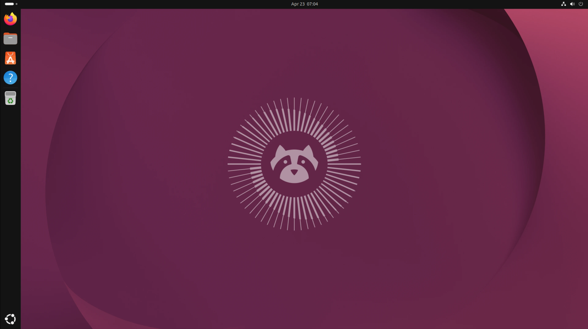
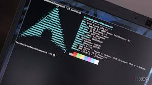
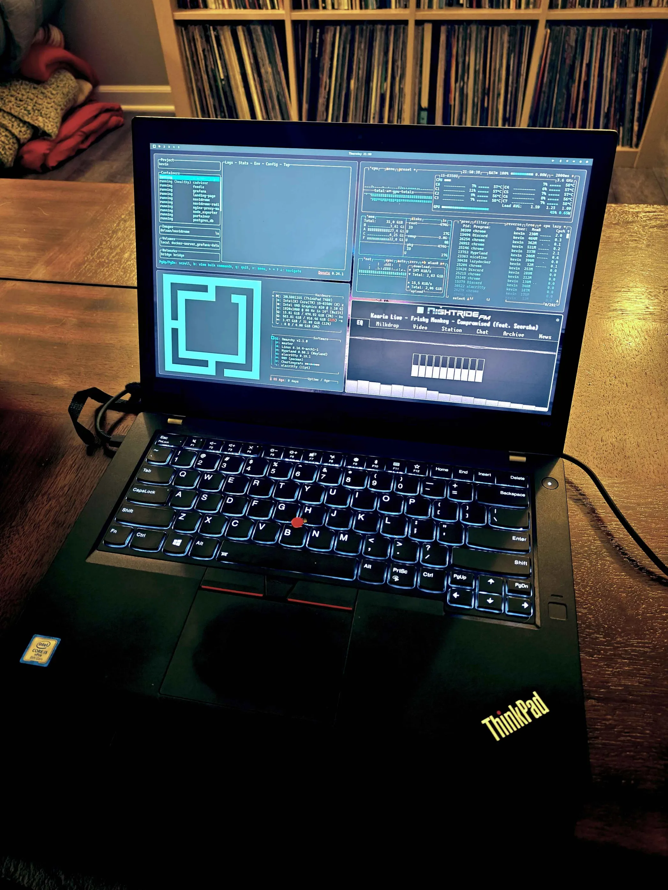

linux is a kernal not a OS and it is gnu/linux you do not need to use kali to hack
if you want to use linux u can be confese i can tell u what distro a person like u MAY LIKE

this is ubuntu and ubuntu is beginner friendly and not trying to be windows or mac os it is trying to
problem: bloat, more storage bad for old computers

Arch linux is one of the most over hyped OS.
It is famous for being A simple, lightweight distribution it do not have any desktop environment when you install it that means no gui it very hard to install.
If you like Arch but do not want to accidentally brick computer you can use Omarchy which is what i use.

Omarchy is a Beautiful, Modern & Opinionated Linux by DHH i use omarchy omarchy has "nice community" and has hyperland some people hate omarchy because a fresh install has a lot of bloat but i am using it.